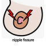

Nipple fissure
:RX
.
حالتی شایع در مادران شیرده میباشد و گاها به علت تحریک تماسی با لباس در ورژشکاران ( دوندگی یا دوچرخه سواری) دیده میشود
توصیه های درمانی :
▪️آموزش نحوه صحیح شیردهی
▪️پوشاندن نوک سینه با گاز
▪️پرهیز از پوشیدن لباس های با الیاف زبر و نامناسب
▪️پماد های نرم کننده
▪️کمپرس گرم
▪️بعد از شیردهی مقداری شیر دور نیپل مالیده شود و نیپل را خشک نکنند
▪️استفاده از nipple shield
✳️ قرمزی
✳️ درد و ناراحتی
✳️ سوزش
✳️ خشکی
✳️ خروج ترشح یا خونریزی
1️⃣ درماتیت تماسی
2️⃣ اگزما
3️⃣ پسوریازیس
4️⃣ کنسر
5️⃣ بیماری پاژه
Thrush 6️⃣